Основи програмування
Звіт до лабораторної роботи №5
Рекурсивні функції • Варіант 10
Оберіть розділ звіту
Лабораторна робота №5 / 01 з 08
1. Мета роботи
- Вивчити особливості рекурсивних процесів.
- Опанувати технологію рекурсивних обчислень.
- Навчитися розробляти алгоритми та програми із застосуванням рекурсивних функцій.
Лабораторна робота №5 / 02 з 08
2. Умови задач
Завдання 1 - варіант 10
Варіант 10 (у таблиці 20 варіантів, 30 - 20 = 10).
Біноміальні коефіцієнти розкладання бінома (a + b)i утворюють i-й рядок трикутника Паскаля. Кожне число в трикутнику, крім перших трьох, є сумою чисел, розташованих над ним у попередньому рядку. Число в i-му рядку (i = 0, 1, 2, ...) на j-му місці (j = 0, 1, ..., i) задається формулою:
Сам трикутник Паскаля задається рекурентним співвідношенням:
Надрукувати перші n рядків трикутника Паскаля, використавши рекурсивне визначення його елементів. Кількість рядків вводиться з клавіатури.
Реалізувати рекурсивний та ітеративний варіанти розв'язку задачі, використовуючи рекурсію та оператор циклу. Порівняти ефективність рекурсивної та ітеративної реалізацій, визначивши глибину рекурсії та кількість ітерацій циклу.
Завдання 2 - варіант 10
Варіант 10 (у таблиці 20 варіантів, 30 - 20 = 10).
Увести з клавіатури два натуральних a і b. Визначити кількість послідовностей з a нулів і b одиниць, в яких ніякі два нулі не стоять поруч. Вивести знайдені послідовності з нулів та одиниць. Контрольний тест: введені числа 2 2, отриманий результат: 3 0101 1010 0110.
Загальні вимоги до завдання: забороняється використовувати масиви і рядки, використання рекурсії обов'язкове.
Лабораторна робота №5 / 03 з 08
3. Аналіз задач
Завдання 1 - варіант 10
Співвідношення з умови f(i, j) = f(i, j - 1) + f(i - 1, j) трикутника Паскаля не дає: уже для i = 2, j = 0 другий індекс стає від'ємним, і рекурсія ніколи не доходить до базового випадку. Тому взято співвідношення, за яким число дорівнює сумі двох чисел над ним, як і сказано в умові:
Умова закінчення рекурсії: елемент стоїть на краю трикутника (j = 0 або j = i), тоді функція повертає 1. Для інших елементів вона викликає себе двічі для рядка i - 1.
У циклі масив не потрібен, кожен елемент рядка рахується через попередній:
Спочатку виконується множення, потім ділення. Якби ділити першим, ціле ділення відкинуло б дробову частину.
У рекурсивному варіанті програма рахує всі виклики функції calculateElement. Кожен
виклик отримує свою глибину параметром, а найбільша глибина запам'ятовується. У циклі рахуються
проходи внутрішнього циклу, тобто обчислені елементи без першої одиниці рядка.
Кількість рядків вводиться від 1 до 15: при n = 15 трикутник має ширину 75 символів і ще вміщується у вікно консолі. Якщо введено не число або число поза межами, введення повторюється.
Таблиця 1 - Функції програми завдання 1
| Функція | Призначення |
|---|---|
main | виклик основних кроків програми |
welcome | виведення даних про автора та умови задачі |
inputRowCount | введення кількості рядків з перевіркою |
calculateElement | рекурсивне обчислення елемента, підрахунок викликів і глибини |
printRecursive | друк трикутника через рекурсивну функцію |
printIterative | друк трикутника в циклі, підрахунок ітерацій |
printEfficiency | виведення показників ефективності |
Завдання 2 - варіант 10
Масиви й рядки заборонені, тому послідовність зберігається цифрами цілого числа: дописати цифру d означає обчислити s · 10 + d. Є одна проблема: число не може починатися з нулів, і 0101 перетворилось би на 101. Щоб нулі не губились, на початку числа стоїть одиниця-маркер, тобто 0101 зберігається як 10101.
Друк теж рекурсивний. Функція printSequence спочатку друкує число без останньої цифри
(s / 10), потім саму останню цифру (остача від ділення на 10). На маркері рекурсія зупиняється, тому
він не виводиться.
Число має вміститися в int, тому a + b не більше 9. Під час введення a береться від 1
до 8, b від 1 до 9 - a. Якщо введено не число або число поза межами, введення повторюється.
Функція buildSequences дописує по одній цифрі. Вона знає, скільки нулів і одиниць
лишилось, яка цифра попередня і яка частина вже побудована:
- умова закінчення рекурсії: нулів і одиниць не лишилось, послідовність друкується і рахується;
- нуль дописується, якщо нулі лишились і попередня цифра не нуль;
- одиниця дописується, якщо одиниці лишились.
Обидві гілки виконуються по черзі, тому перебираються всі можливі варіанти. На першому кроці попередньою цифрою передається 1, щоб на початку можна було поставити нуль. Нуль пробується першим, тому порядок послідовностей інший, ніж у контрольному тесті.
Кількість стає відома лише після перебору, тому спочатку виводяться послідовності, а потім кількість. Якщо нулів забагато (a > b + 1), послідовностей немає: програма повідомляє про це і виводить кількість 0. В одному рядку виводиться по 6 послідовностей.
Таблиця 2 - Функції програми завдання 2
| Функція | Призначення |
|---|---|
main | виклик основних кроків програми |
welcome | виведення даних про автора та умови задачі |
inputNumber | введення цілого числа з перевіркою меж |
inputData | введення a і b |
printSequence | рекурсивний друк цифр без маркера |
buildSequences | рекурсивна побудова послідовностей |
printResult | запуск пошуку і виведення кількості |
Джерела: Ковалюк Т.В. Алгоритмізація та програмування, 2024; Ковалюк Т.В., Петрівський В.Я. Гарний стиль програмування мовами C, C++, C#, 2025.
Лабораторна робота №5 / 04 з 08
4. Блок-схеми алгоритмів
Завдання 1 - варіант 10

welcome (виведення даних про автора та умови задачі)
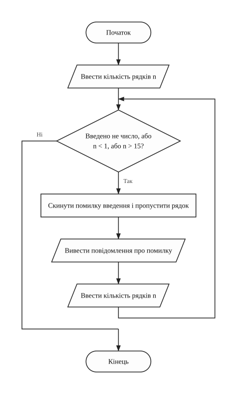
inputRowCount (введення кількості рядків з перевіркою)
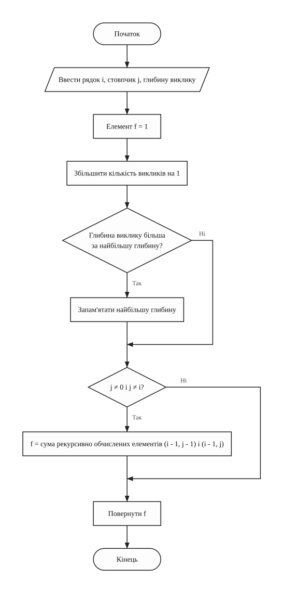
calculateElement (рекурсивне обчислення елемента трикутника)
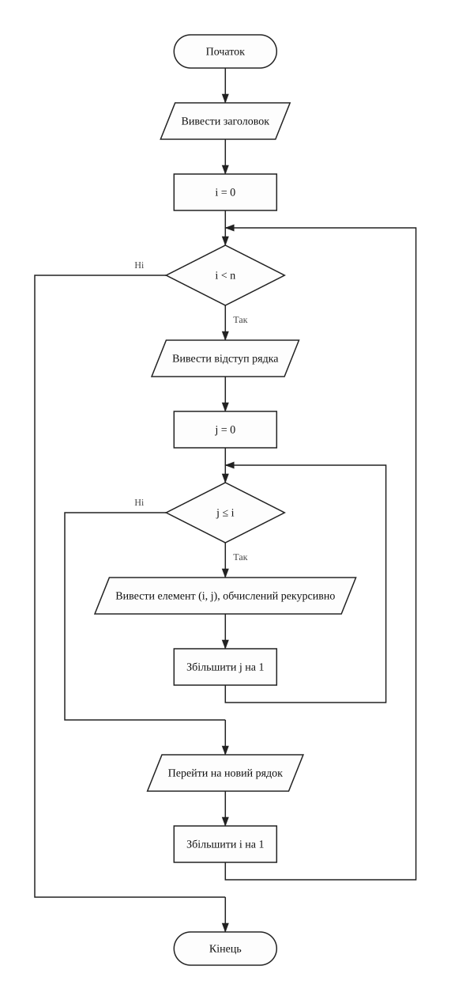
printRecursive (друк трикутника через рекурсію)
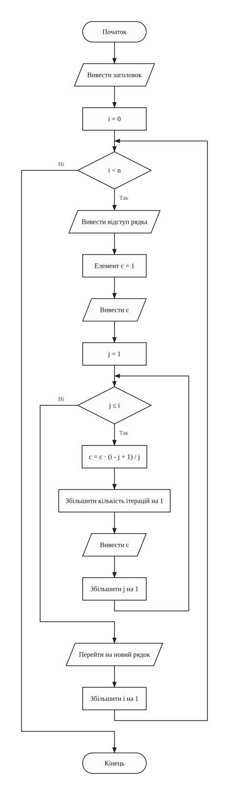
printIterative (друк трикутника в циклі)
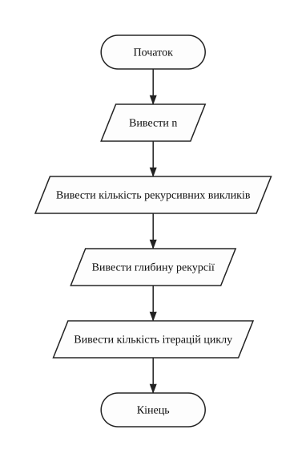
printEfficiency (виведення показників ефективності)
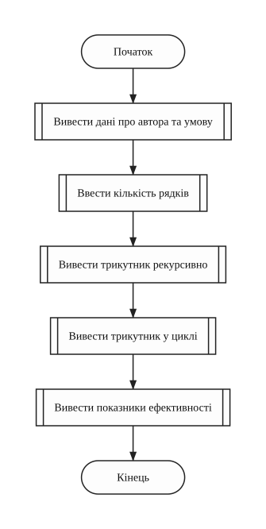
main (головна функція)Завдання 2 - варіант 10

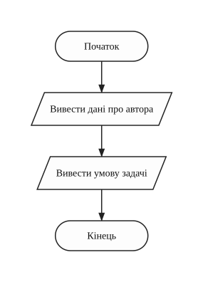
welcome (виведення даних про автора та умови задачі)
inputNumber (введення цілого числа з перевіркою меж)
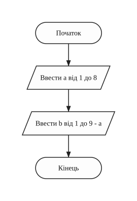
inputData (введення кількості нулів і одиниць)
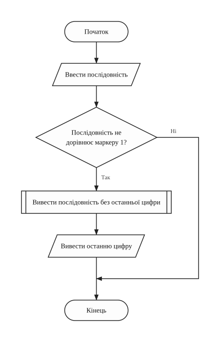
printSequence (рекурсивний друк цифр послідовності без маркера)
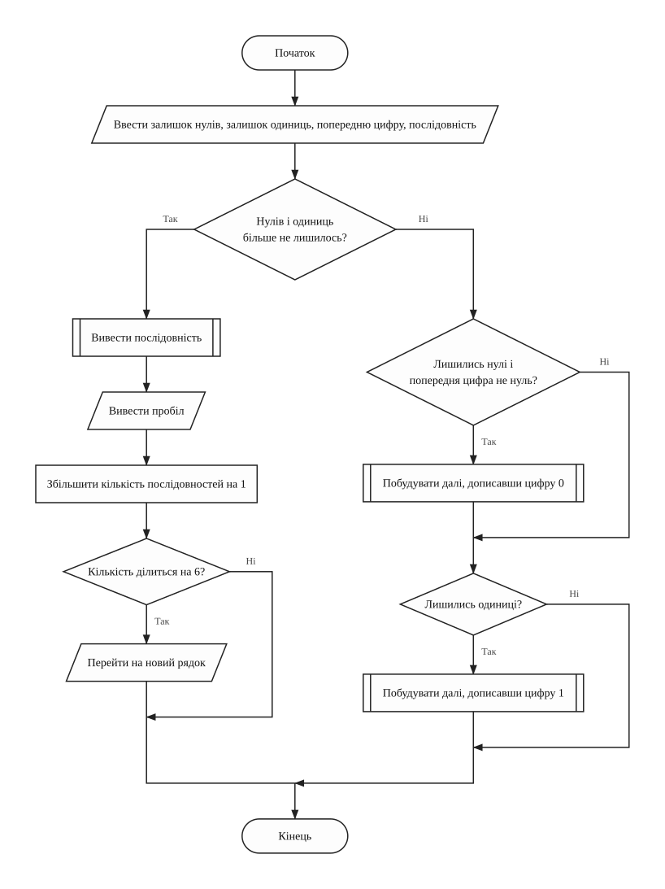
buildSequences (рекурсивна побудова послідовностей)
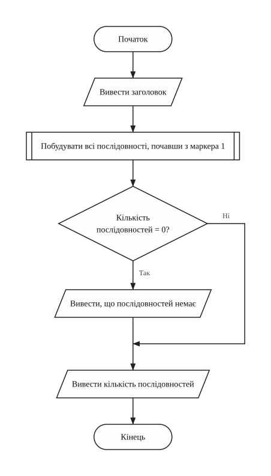
printResult (запуск пошуку і виведення кількості)
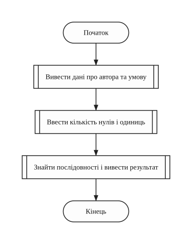
main (головна функція)Лабораторна робота №5 / 05 з 08
5. Тексти програм
Завдання 1 - варіант 10
Файл task1.cpp
/////////////////////////////////////////////////////////////////////
// Ім'я файлу: task1.cpp
// Автор: Шимко Матвій, гр. ІПЗ-11(3)
// Номер версії модуля: version 1
// Запланована ціль: лабораторна робота №5, завдання 1, варіант 10.
// Надрукувати трикутник Паскаля рекурсивно й
// ітераційно, порівняти ефективність.
/////////////////////////////////////////////////////////////////////
#include <iomanip>
#include <iostream>
using namespace std;
//=========== константи
const int MIN_ROWS = 1; // найменша кількість рядків
const int MAX_ROWS = 15; // найбільша кількість рядків
const int ELEMENT_WIDTH = 5; // ширина одного числа в трикутнику
//=========== глобальні змінні
int rowCount = 0; // кількість рядків трикутника
int callCount = 0; // кількість рекурсивних викликів
int recursionDepth = 0; // найбільша глибина рекурсії
int iterationCount = 0; // кількість ітерацій циклу
/*
* Функція виводить дані про автора та умову задачі
* Параметри: немає
* Значення, що повертаються: немає
*/
void welcome()
{
cout << "Lab work 5. Task 1. Variant 10." << endl;
cout << "Author: Matvii Shimko, group IPZ-11(3)" << endl << endl;
cout << "Print the first n rows of Pascal's triangle in two ways:" << endl;
cout << "with recursion and with a loop. Compare the efficiency." << endl
<< endl;
}
/*
* Функція вводить кількість рядків. Якщо введено не число або число
* поза межами, введення повторюється
* Параметри: немає
* Значення, що повертаються: немає
*/
void inputRowCount()
{
cout << "Enter n (from 1 to 15): ";
cin >> rowCount;
while (cin.fail() || rowCount < MIN_ROWS || rowCount > MAX_ROWS)
{
cin.clear(); // скинути помилку введення
cin.ignore(1000, '\n'); // і пропустити неправильний рядок
cout << "Error! Enter n from 1 to 15: ";
cin >> rowCount;
}
}
/*
* Функція рекурсивно рахує елемент трикутника:
* f(row, 0) = f(row, row) = 1,
* f(row, column) = f(row - 1, column - 1) + f(row - 1, column).
* Рахує виклики й запам'ятовує найбільшу глибину
* Параметри: row - номер рядка, column - номер місця в рядку,
* depth - глибина поточного виклику
* Значення, що повертаються: значення елемента
*/
int calculateElement(int row, int column, int depth)
{
int element = 1; // на краях трикутника стоять одиниці
callCount++;
if (depth > recursionDepth)
{
recursionDepth = depth;
}
if (column != 0 && column != row)
{
element = calculateElement(row - 1, column - 1, depth + 1)
+ calculateElement(row - 1, column, depth + 1);
}
return element;
}
/*
* Функція друкує трикутник, викликаючи рекурсію для кожного елемента
* Параметри: немає
* Значення, що повертаються: немає
*/
void printRecursive()
{
cout << endl << "Recursive variant:" << endl;
for (int i = 0; i < rowCount; i++)
{
cout << setw((rowCount - i - 1) * ELEMENT_WIDTH / 2) << "";
for (int j = 0; j <= i; j++)
{
cout << setw(ELEMENT_WIDTH) << calculateElement(i, j, 1);
}
cout << endl;
}
}
/*
* Функція друкує трикутник у циклі. Кожен наступний елемент рядка
* рахується через попередній: C(i, j) = C(i, j - 1) * (i - j + 1) / j
* Параметри: немає
* Значення, що повертаються: немає
*/
void printIterative()
{
int element = 1; // поточний елемент рядка
cout << endl << "Iterative variant:" << endl;
for (int i = 0; i < rowCount; i++)
{
cout << setw((rowCount - i - 1) * ELEMENT_WIDTH / 2) << "";
element = 1;
cout << setw(ELEMENT_WIDTH) << element;
for (int j = 1; j <= i; j++)
{
element = element * (i - j + 1) / j;
iterationCount++;
cout << setw(ELEMENT_WIDTH) << element;
}
cout << endl;
}
}
/*
* Функція виводить показники ефективності обох варіантів
* Параметри: немає
* Значення, що повертаються: немає
*/
void printEfficiency()
{
cout << endl << "Efficiency for n = " << rowCount << ":" << endl;
cout << "Recursive calls: " << callCount << endl;
cout << "Recursion depth: " << recursionDepth << endl;
cout << "Loop iterations: " << iterationCount << endl;
}
int main()
{
welcome();
inputRowCount();
printRecursive();
printIterative();
printEfficiency();
return 0;
}
Завдання 2 - варіант 10
Файл task2.cpp
/////////////////////////////////////////////////////////////////////
// Ім'я файлу: task2.cpp
// Автор: Шимко Матвій, гр. ІПЗ-11(3)
// Номер версії модуля: version 1
// Запланована ціль: лабораторна робота №5, завдання 2, варіант 10.
// Знайти послідовності з a нулів і b одиниць, де
// два нулі не стоять поруч. Без масивів і рядків.
/////////////////////////////////////////////////////////////////////
#include <iostream>
using namespace std;
//=========== константи
const int MAX_LENGTH = 9; // більша довжина не вміститься в int
const int ROW_SIZE = 6; // кількість послідовностей у рядку
const int START_SEQUENCE = 1; // одиниця-маркер на початку числа
//=========== глобальні змінні
int zeroCount = 0; // кількість нулів a
int oneCount = 0; // кількість одиниць b
int sequenceCount = 0; // кількість знайдених послідовностей
/*
* Функція виводить дані про автора та умову задачі
* Параметри: немає
* Значення, що повертаються: немає
*/
void welcome()
{
cout << "Lab work 5. Task 2. Variant 10." << endl;
cout << "Author: Matvii Shimko, group IPZ-11(3)" << endl << endl;
cout << "Find all sequences of a zeros and b ones" << endl;
cout << "where no two zeros stand next to each other." << endl << endl;
}
/*
* Функція вводить ціле число. Якщо введено не число або число
* поза межами, введення повторюється
* Параметри: minValue - найменше допустиме значення,
* maxValue - найбільше допустиме значення
* Значення, що повертаються: введене число
*/
int inputNumber(int minValue, int maxValue)
{
int number = 0;
cin >> number;
while (cin.fail() || number < minValue || number > maxValue)
{
cin.clear(); // скинути помилку введення
cin.ignore(1000, '\n'); // і пропустити неправильний рядок
cout << "Error! Enter a number from " << minValue << " to " << maxValue
<< ": ";
cin >> number;
}
return number;
}
/*
* Функція вводить a і b, сума яких не більша за 9
* Параметри: немає
* Значення, що повертаються: немає
*/
void inputData()
{
cout << "Enter a (from 1 to 8): ";
zeroCount = inputNumber(1, MAX_LENGTH - 1);
cout << "Enter b (from 1 to " << MAX_LENGTH - zeroCount << "): ";
oneCount = inputNumber(1, MAX_LENGTH - zeroCount);
}
/*
* Функція рекурсивно друкує цифри послідовності без маркера:
* спочатку всі цифри, крім останньої, потім останню
* Параметри: sequence - послідовність, записана цифрами числа
* Значення, що повертаються: немає
*/
void printSequence(int sequence)
{
if (sequence != START_SEQUENCE)
{
printSequence(sequence / 10);
cout << sequence % 10;
}
}
/*
* Функція рекурсивно будує послідовності, дописуючи по одній цифрі.
* Нуль можна дописати, лише якщо попередня цифра не нуль
* Параметри: zerosLeft, onesLeft - скільки цифр ще треба дописати,
* lastDigit - попередня цифра,
* sequence - вже побудована частина числом з маркером
* Значення, що повертаються: немає
*/
void buildSequences(int zerosLeft, int onesLeft, int lastDigit, int sequence)
{
if (zerosLeft == 0 && onesLeft == 0)
{
printSequence(sequence);
cout << " ";
sequenceCount++;
if (sequenceCount % ROW_SIZE == 0)
{
cout << endl;
}
}
else
{
if (zerosLeft > 0 && lastDigit != 0)
{
buildSequences(zerosLeft - 1, onesLeft, 0, sequence * 10);
}
if (onesLeft > 0)
{
buildSequences(zerosLeft, onesLeft - 1, 1, sequence * 10 + 1);
}
}
}
/*
* Функція запускає пошук і виводить кількість послідовностей
* Параметри: немає
* Значення, що повертаються: немає
*/
void printResult()
{
cout << endl << "Sequences:" << endl;
buildSequences(zeroCount, oneCount, 1, START_SEQUENCE);
if (sequenceCount == 0)
{
cout << "no such sequences";
}
cout << endl << endl << "Number of sequences: " << sequenceCount << endl;
}
int main()
{
welcome();
inputData();
printResult();
return 0;
}
Лабораторна робота №5 / 06 з 08
6. Результати виконання роботи
Завдання 1 - варіант 10

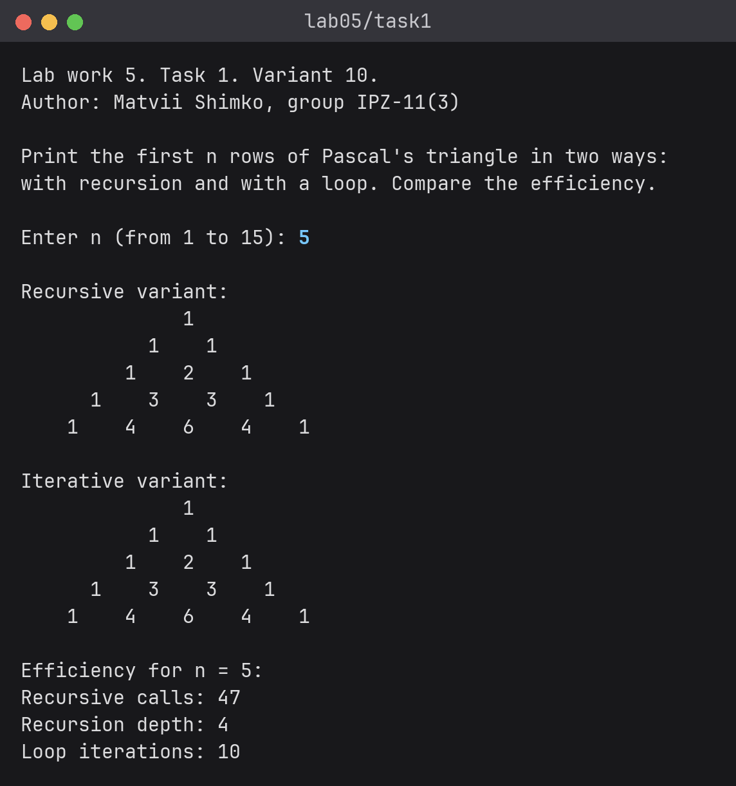

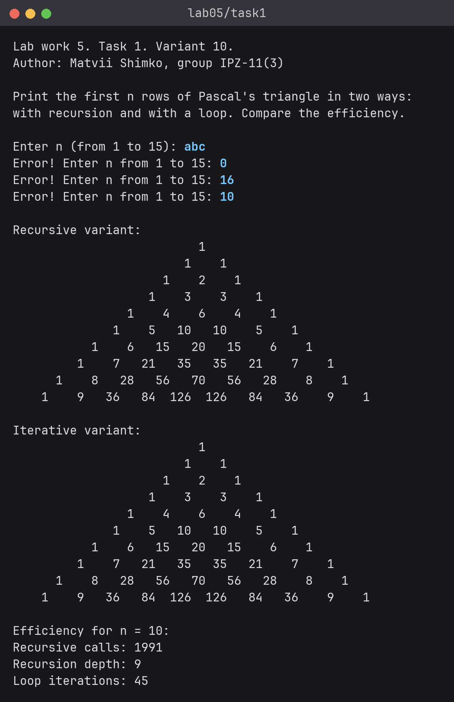

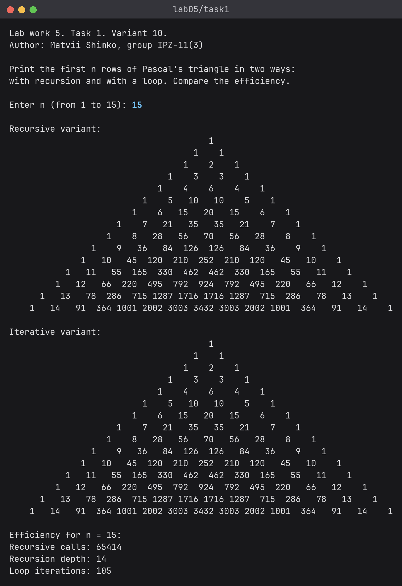

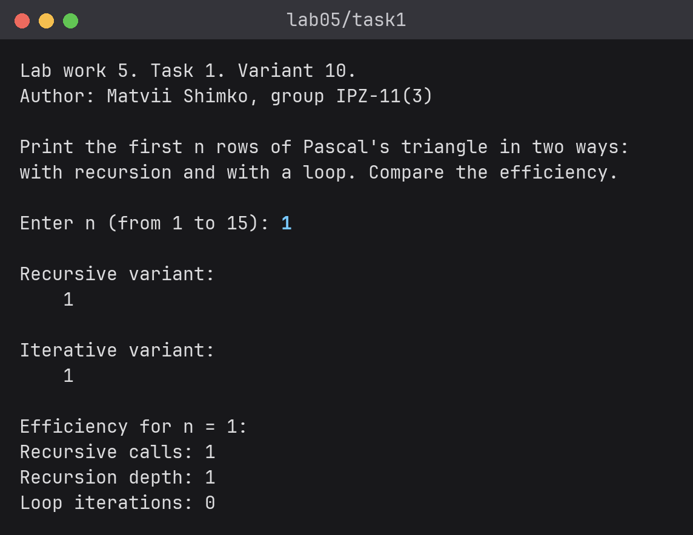
Завдання 2 - варіант 10

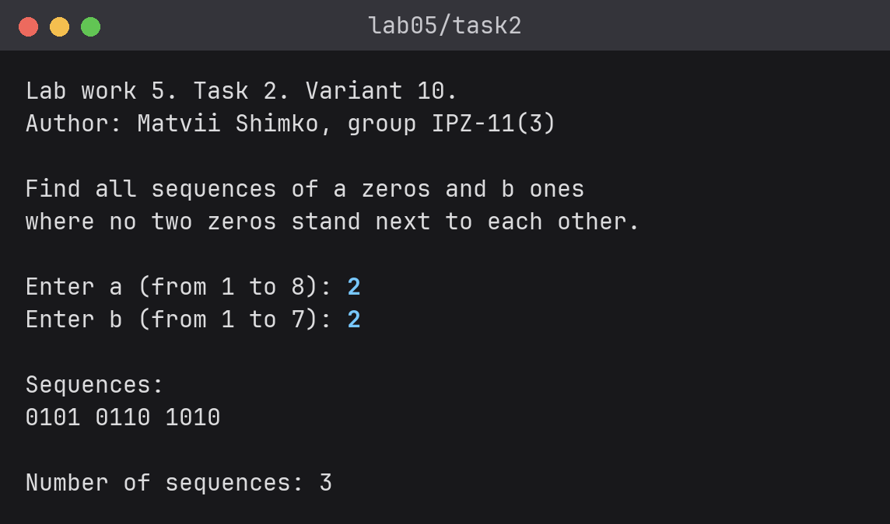

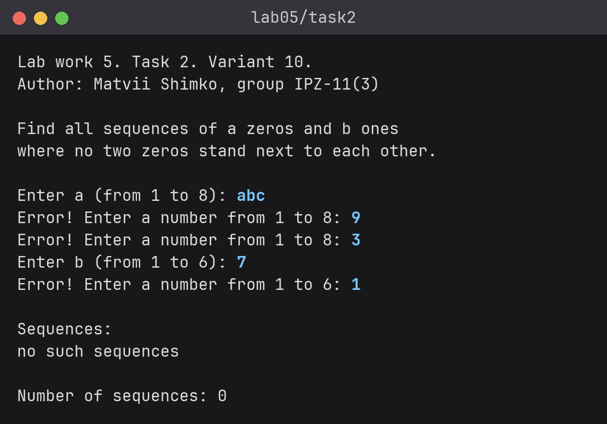

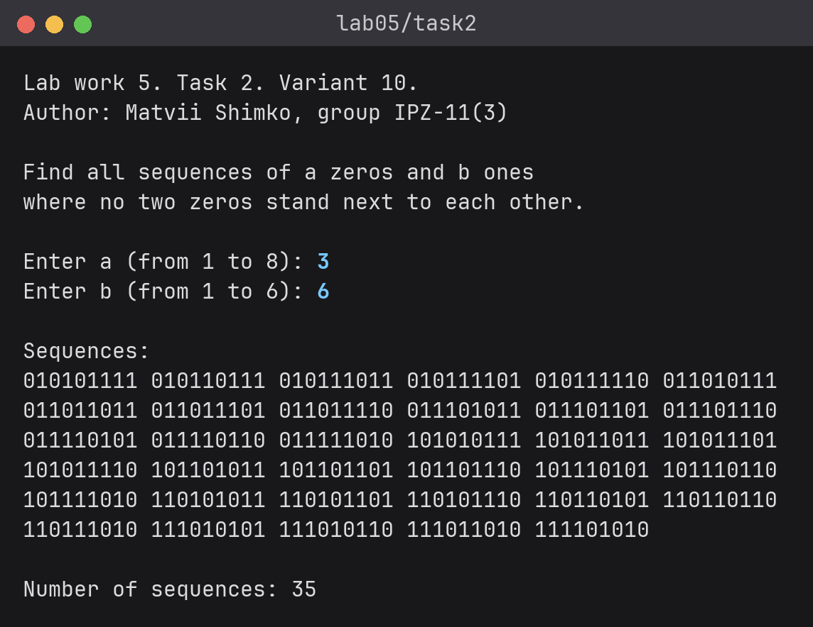
Лабораторна робота №5 / 07 з 08
7. Аналіз достовірності результатів
Завдання 1 - трикутник
Обидва варіанти надрукували однакові трикутники. Окремі елементи і суми рядків перевірено вручну за формулою Cij = i! / (j! · (i - j)!):
Таблиця 3 - Контрольні елементи трикутника
| Елемент | За формулою | Очікується | Програма |
|---|---|---|---|
| i = 4, j = 2 | 4! / (2! · 2!) = 24 / 4 | 6 | 6 |
| i = 9, j = 4 | 9! / (4! · 5!) = 362880 / 2880 | 126 | 126 |
| i = 14, j = 7 | 14! / (7! · 7!) = 87178291200 / 25401600 | 3432 | 3432 |
| сума рядка i = 4 | 1 + 4 + 6 + 4 + 1 = 24 | 16 | 16 |
| сума рядка i = 9 | 1 + 9 + 36 + 84 + 126 + 126 + 84 + 36 + 9 + 1 = 29 | 512 | 512 |
Завдання 1 - порівняння ефективності
Показники програми порівняно з ручним підрахунком. Один елемент C рахується за 2C - 1 викликів, тому всього викликів 2 · (сума всіх чисел трикутника) - (кількість чисел). Наприклад, при n = 5 сума чисел 31, а самих чисел 15. Глибина дорівнює n - 1, лише при n = 1 вона дорівнює 1. Ітерацій 1 + 2 + ... + (n - 1).
Таблиця 4 - Рекурсивний та ітераційний варіанти
| n | Викликів вручну | Викликів у програмі | Глибина, вручну / програма | Ітерацій, вручну / програма |
|---|---|---|---|---|
| 1 | 2 · 1 - 1 = 1 | 1 | 1 / 1 | 0 / 0 |
| 5 | 2 · 31 - 15 = 47 | 47 | 4 / 4 | 10 / 10 |
| 10 | 2 · 1023 - 55 = 1991 | 1991 | 9 / 9 | 45 / 45 |
| 15 | 2 · 32767 - 120 = 65414 | 65414 | 14 / 14 | 105 / 105 |
Для n = 15 рекурсія зробила 65414 викликів, а цикл 105 ітерацій, це приблизно в 623 рази більше. Глибина при цьому лише 14. Викликів так багато, бо одні й ті самі елементи рахуються знову і знову. Для цієї задачі кращий ітераційний варіант.
Завдання 2 - контрольний тест
Для a = 2, b = 2 методичка дає результат 3: 0101 1010 0110. Програма вивела 0101 0110 1010 і кількість 3. Послідовності ті самі, відрізняються лише порядок і місце кількості. Порядку умова не задає.
Кількість перевірено формулою. Між одиницями і на краях є b + 1 місць, у кожне можна поставити не більше одного нуля, тому послідовностей Cb+1a:
Таблиця 5 - Кількість послідовностей
| a | b | Формула | Очікується | Програма |
|---|---|---|---|---|
| 1 | 1 | C21 | 2 (01, 10) | 2: 01 10 |
| 2 | 2 | C32 | 3 | 3 |
| 3 | 1 | a > b + 1 | 0 | 0, "no such sequences" |
| 3 | 2 | C33 | 1 (01010) | 1: 01010 |
| 4 | 4 | C54 | 5 | 5 |
| 4 | 5 | C64 | 15 | 15 |
| 3 | 6 | C73 | 35 | 35 |
| 2 | 7 | C82 | 28 | 28 |
| 1 | 8 | C91 | 9 | 9 |
У сценарії з некоректними даними програма відхилила abc, 9 і 7 і попросила ввести значення ще раз. У виведених послідовностях кількість нулів і одиниць правильна, два нулі поруч не стоять.
Лабораторна робота №5 / 08 з 08
8. Висновки
Написано дві програми з рекурсивними функціями. Перша друкує трикутник Паскаля рекурсивно і в циклі та рахує виклики, глибину рекурсії й ітерації. Формула з умови трикутника не дає, тому взято f(i, j) = f(i - 1, j - 1) + f(i - 1, j). При n = 15 рекурсія зробила 65414 викликів проти 105 ітерацій циклу. У другій програмі масиви й рядки заборонені, тому послідовність зберігається цифрами числа з маркером, через це a + b не більше 9.